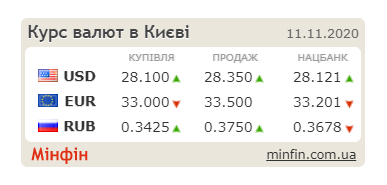

ЛАБОРАТОРНА РОБОТА №5
Тема: ВИКОРИСТАННЯ В СЦЕНАРІЯХ JAVASCRIPT БІБЛІОТЕК КРОС-БРАУЗЕРНИХ ІНТЕРФЕЙСІВ МЕТОДІВ DOM. БІБЛІОТЕКА JQUERY UI. ЗАСОБИ НАЛАГОДЖЕННЯ І ТЕСТУВАННЯ СЦЕНАРІЇВ JAVASCRIPT.
Мета: придбати практичні навички роботи jQuery UI, вміти додавати до сайту динамічні елементи цієї бібіліотеки, плагін галереї UniteGallery, кнопки соціальних мереж, інформери та інше.
Середовища, в яких ми працювали: Всеволод - Visual Studio Code, Аня - WebStorm, Ангеліна - Visual Studio Code
Динамічні елементи 3 пункту
Фотогалерея
Слайдер фотографій
Слайдер відеоматеріалів
Кнопки соціальних мереж
Інформери
Висновки
У цій лабораторній роботі ми навчились працювати з бібліотекою JQuery. Ми навчились створювати динамічні елементи, розібрались у UniteGallery, знаємо як зробити кнопки соціальних мереж, інформер або те, що потребує використання цієї бібліотеки.